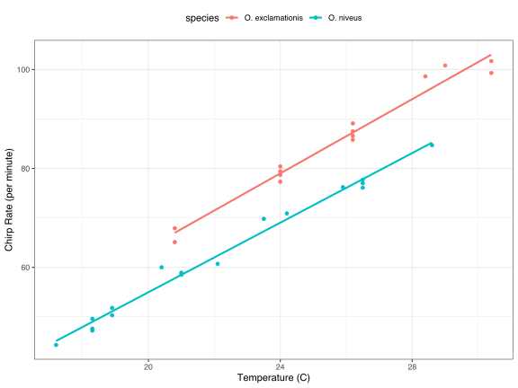
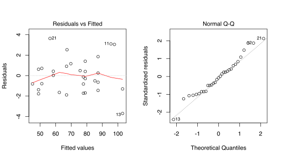

2 A tidyverse primer
2.1 Principles
What does it mean to be “tidy” (distinguish tidy data vs tidy interfaces etc. )
2.2 Code
Things that I think that we’ll need summaries of:
strategies: variable specification, pipes (with data or other first arguments), conflicts and using namespaces, splicing, non-standard evaluation,
tactics:
select,bind_cols,tidyselect,slice,!!and!!!,...for passing arguments, tibbles, joins,nest/unnest,group_by
2.3 A review of base R modeling syntax
This book is about software, specifically R syntax for creating models. Before descrbing how tidy principles can be used in data analysis, it makes sense to show how models are created and utilized using traditional base R code. This section is a brief illustration of the those conventions. It is not exhaustive but provides readers uninitiated to R ideas about the basic motifs that are commonly used.
The S language, on which R is based, has had a rich data analysis environment since the publication of Chambers and Hastie (1992) (commonly known as The White Book). This version of S introduced standard infrastructure components, such as symbolic model formulae, model matrices, data frames, as well as the standard object-oriented programming methods for data analysis. Much of these implementations have not substantively changes since then.
To demonstrate the fundamentals, experimental data from McDonald (2009) (by way of Mangiafico (2015)) are used. These data relate how the ambient temperature related to the rate of cricket chirps per minute. Data were collected for two species: O. exclamationis and O. niveus. The data are contained in a data frame called crickets that contains a total of 31 data points. These data are shown via a ggplot graph.
library(ggplot2)
names(crickets)
#> [1] "species" "temp" "rate"
# Plot the temperature on the x-axis, the chirp rate on the y-axis. The plot
# elements will be colored differently for each species:
ggplot(crickets, aes(x = temp, y = rate, col = species)) +
# Plot points for each data point and color by species
geom_point() +
# Show a simple linear model fit created separately for each species:
geom_smooth(method = lm, se = FALSE) +
labs(x = "Temperature (C)", y = "Chirp Rate (per minute)")
The data show fairly linear trends for each species. For a given temperature, O. exclamationis appears to have more chirps than the other species. For an inferential model, the researchers might have specified the following null hypotheses prior to seeing the data:
Temperature has no affect on the chirp rate (denoted as hypothesis #1)
There are no differences between the species in terms of chirp rate.
There may be some scientific rationale for being able to predict the chirp rate but the focus here will be on inference.
To fit an ordinary linear model, the lm() function is commonly used. The important arguments to this function are a model formula and a data frame that contains the data The formula is symbolic. For example, the simple formula:
states that the chirp rate is the outcome (since it is on the left-hand side of the tidle ~) and that the temperature values are the predictor1. Suppose the data contained the time of day in which the measurements were obtained in a column called time. The formula
would not add the time and temperature values together. This formula would symbolically represent that temperature and time should be added as a separate main effects to the model. Main effects are model terms that contain a single predictor variable.
There are no time measurements in these data but the species can be added to the model in the same way:
Species is not a quantitative variable; in the data frame, it is represented as a factor column with levels "O. exclamationis" and "O. niveus". The vast majority of model functions cannot operate on non-numeric data. For species, the model needs to encode the species data into a numeric format. The most common approach is to use indicator variables (also known as “dummy variables”) in place of the original qualitative values. In this instance, since species has two possible values, the model formula will automatically encode this column as numeric by adding a new column that has a value of zero when the species is "O. exclamationis" and a value of one when the data correspond to "O. niveus". The underlying formula machinery will automatically convert these data for the data used to create the model as well as for any new data points (for example, when the model is used for prediction).
Suppose there were five species. The model formula would automatically add four additional binary columns that are binary indicators for four of the species. The reference level of the factor (i.e., the first level) is always left out of the predictor set. The idea is that, if you know the values of the four indicator variables, the value of the species can be determined.
The model formula shown above creates a model where there are different y-intercepts for each species. It is a reasonable supposition that the slopes of the regression lines could be different for each species. To accommodate this structure, an interaction term can be added to the model. This can be specified in a few different ways, the most basic uses the colon:
rate ~ temp + species + temp:species
# A shortcut can be used to expand all interactions containing
# interactions with two variables:
rate ~ (temp + species)^2In addition to the convenience of automatically creating indicator variables, the formula offers a few other niceties:
In-line functions can be used in the formula. For example, if the natural log of the temperate were used, the formula
rate ~ log(temp)could be used. Since the formula is symbolic by default, literal math can be done to the predictors using the identity functionI(). For example, to use Fahrenheit units, the formula could berate ~ I( (temp * 9/5) + 32 )to make the conversion.R has many functions that are useful inside of formulas. For example,
poly(x, 3)would create linear, quadratic, and cubic terms forxto the model as main effects. Also, thesplinespackage has several functions to create nonlinear spline terms in the formula.For data sets where there are many predictors, the period shortcut is available. The period represents main effects for all of the columns that are not on the left-hand side of the tilde. For example, using
~ (.)^3would create main effects as well as all two- and three-variable interactions to the model.
For the initial data analysis, the two-factor interaction model is used. In this book, the suffix _fit is used for R objects for fitted models.
interaction_fit <- lm(rate ~ (temp + species)^2, data = crickets)
# To print a short summary of the model:
interaction_fit
#>
#> Call:
#> lm(formula = rate ~ (temp + species)^2, data = crickets)
#>
#> Coefficients:
#> (Intercept) temp
#> -11.041 3.751
#> speciesO. niveus temp:speciesO. niveus
#> -4.348 -0.234This output is a little hard to read. For the species indicator variables, R mashes the variable name (species) together with the factor level (O. niveus) with no delimiter.
Before going into any results for this model, the fit should be assessed using diagnostic plots. The plot() method for lm objects can be used. It produces a set of four plots for the object, each showing different aspects of the fit. Two plots are shown here:
# Place two plots next to one another:
par(mfrow = c(1, 2))
# Show residuals vs predicted values:
plot(interaction_fit, which = 1)
# A normal quantile plot on the residuals:
plot(interaction_fit, which = 2)
These appear reasonable enough to conduct inferential analysis.
From a technical standpoint, R is lazy. Model fitting functions typically compute the minimum possible quantities. For example, there may be interest in the coefficient table for each model term. This is not automatically computed but is instead computed via the summary() method.
Our second order of business is to assess if the inclusion of the interaction term is necessary. The most appropriate approach for this model is to re-compute the model without the interaction term and use the anova() method.
# Fit a reduced model:
main_effect_fit <- lm(rate ~ temp + species, data = crickets)
# Compare the two:
anova(main_effect_fit, interaction_fit)
#> Analysis of Variance Table
#>
#> Model 1: rate ~ temp + species
#> Model 2: rate ~ (temp + species)^2
#> Res.Df RSS Df Sum of Sq F Pr(>F)
#> 1 28 89.3
#> 2 27 85.1 1 4.28 1.36 0.25The results of the statistical test generates a p-value of 0.3. This value implies that there is a lack of evidence for the alternative hypothesis that the the interaction term is needed by the model. For this reason, further analysis will be conducted on the model without the interaction.
Residual plots should be re-assessed to make sure that our theoretical assumptions are valid enough to trust the p-values produced by the model (not shown but spoiler alert: they are).
The summary() method is used to inspect the coefficients, standard errors, and p-values of each model term:
summary(main_effect_fit)
#>
#> Call:
#> lm(formula = rate ~ temp + species, data = crickets)
#>
#> Residuals:
#> Min 1Q Median 3Q Max
#> -3.013 -1.130 -0.391 0.965 3.780
#>
#> Coefficients:
#> Estimate Std. Error t value Pr(>|t|)
#> (Intercept) -7.2109 2.5509 -2.83 0.0086
#> temp 3.6028 0.0973 37.03 < 2e-16
#> speciesO. niveus -10.0653 0.7353 -13.69 6.3e-14
#>
#> (Intercept) **
#> temp ***
#> speciesO. niveus ***
#> ---
#> Signif. codes:
#> 0 '***' 0.001 '**' 0.01 '*' 0.05 '.' 0.1 ' ' 1
#>
#> Residual standard error: 1.79 on 28 degrees of freedom
#> Multiple R-squared: 0.99, Adjusted R-squared: 0.989
#> F-statistic: 1.33e+03 on 2 and 28 DF, p-value: <2e-16From these values, the chirp rate for each species increases by 3.6 chirps as the temperature increases by a single degree. This term shows strong statistical significance as evidenced by the p-value. The species term has a value of -10.07. This indicates that, across all temperature values, O. niveus is a chirp rate that is about 10 fewer chirps per minute. Similar to the temperature term, the species effect is associated with a very small p-value.
The only issue in this analysis is the intercept value. It indicates that at 0 C, there are -7.21 chirps per minute. While this is unreasonable, the data only go as low as 17.2 C and interpreting the model at 0 C would be an extrapolation. This would be a bad idea. That said, the model fit is good within the applicable range of the temperature values and the conclusions should be limited to the observed temperature range.
If there were a need to estimate the chirp rate at a temperature that was not observed in the experiment, the predict() method would be used. It takes the model object and a data frame of new values for prediction. For example, the model estimates the chirp rate for O. exclamationis for temperatures between 15 C and 20 C can be computed via:
new_values <- data.frame(species = "O. exclamationis", temp = 15:20)
predict(main_effect_fit, new_values)
#> 1 2 3 4 5 6
#> 46.8 50.4 54.0 57.6 61.2 64.8Note that the non-numeric value of species is given to the predict method (as opposed to the binary indicator variable).
While this analysis has obviously not been an exhaustive demonstration of R’s modeling capabilities, it does highlight some of the major features:
The language has an expressive syntax for specifying model terms for simple and fairly complex models.
For formula method has many conveniences for modeling that are also applied to new data when predictions are generated.
There are numerous helper functions (e.g.,
anova(),summary()andpredict()) that are used to conduct specific calculations after the fitted model is created.
Finally, as previously mentioned, this framework was devised in 1992. Most of the ideas and methods above were developed in that period and have remained remarkably relavant to this day. It highlights that the S language and, by extension R, has been designed as a language for data analysis since its inception.
2.4 Why tidiness is important for modeling
2.5 Some additional tidy principals for modeling.
References
Chambers, J, and T Hastie, eds. 1992. Statistical Models in S. Boca Raton, FL: CRC Press, Inc.
Mangiafico, S. 2015. “An R Companion for the Handbook of Biological Statistics.” https://rcompanion.org/handbook/.
McDonald, J. 2009. Handbook of Biological Statistics. Sparky House Publishing.
Most model functions implicitly add an intercept column.↩